歡迎加入成功大學！
首先，我要代表學校全體教職員生歡迎你成為成功大學大家庭的一員！也為你的認真努力和選擇喝采，恭喜你！
進入大學是一個全新的起點，成大是一個可以讓你不斷學習、成長及探索的地方。面對即將展開的大學生活，除了大一新鮮人的期待之外，你也許也感到些許忐忑不安：修課，社團、住宿、交友，心情、未來….。「新生支持辦公室」無論是在專業學習上遇到的問題，或是生活上需要的幫助，你都可以透過這個平台獲得即時線上支援。在9月開學之前，你還可以利用我們提供的各項學習資訊，包括：先修課程AP、圖書館及計網中心等線上資源，協助你順利適應新的學習環境。
我們正處於一場關鍵性的科技革新浪潮中，如何善用人工智慧（AI）與各項新工具來支援你的大學生活與學習，並進一步豐富學習體驗、探索它所帶來的無限可能，使你成為具備批判性思維與創新能力的參與者，以迎接未來的挑戰，將是我們共同努力的目標。更重要的是：當你積極探索這些新技術的同時，我也希望你能學會對生命的尊重、對人的關懷和對美感的覺察與體現！
來到成大你將會發現我們的校園擁有府城新舊融合的氣質：紅磚瓦簷的建築、綠意盎然的榕園、滌故更新的未來館、匠心再造的博物館，跨域創新的旺宏館，智慧友善與多元共融的東寧宿舍，以及在樹影搖曳，花香常漫的工學大道兩旁比鄰而立的新舊系館，還有隨四季變化、色彩繽紛的各式花草植栽…都將寫入你精彩可期的大學生活點滴。但校長也想叮嚀：南臺灣陽光燦爛的午後，偶有突如其來的驟雨，也許會把忘了帶傘的你淋得狼狽不堪、措手不及！親愛的孩子，請記住：最好的你，不是因為完美，而是因為你的堅持和勇氣，以良善真誠溫暖這個世界。所以，當你遇到挫折、感到沮喪、疑惑徬徨的時候，請記得會有我們陪你一起面對挑戰，找尋那道只在滂沱大雨後才會出現的虹霓！
期待你在這裡為自己創造一段充實難忘的美好回憶，為人生留下精彩的軌跡！加油！